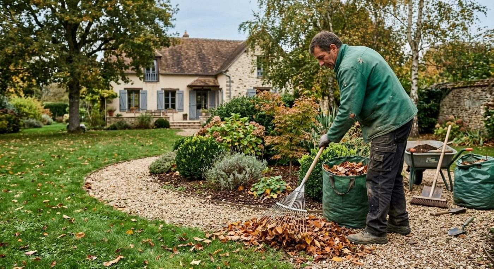

Prestations
Créer, aménager, entretenir : votre jardin de A à Z.
Terrasses, murets, plantations, taille et entretien de jardins à Jouy-en-Josas et dans les environs.



Créer
Donner forme à votre extérieur.
Terrasses & allées
Allées et terrasses
Terrasse en bois, allée dallée ou pavée pour prolonger la maison.
- Préparation et nivellement du terrain
- Bois, dalles ou pavés selon votre projet
Planter
Un jardin qui prend vie
Plantations & massifs
Massifs et plantations
Choix des végétaux, préparation du sol et plantation selon votre terrain.
- Massifs de vivaces et arbustes
- Préparation et amendement du sol
Entretenir
Un jardin net, saison après saison.
Taille & entretien
Haies et massifs entretenus
Un entretien régulier ou ponctuel pour garder jardin et haies en bon état.
- Taille de haies
- Tonte et désherbage
Contact
Un projet en tête ? Parlons-en.
Décrivez votre besoin : nous vous rappelons pour en discuter.